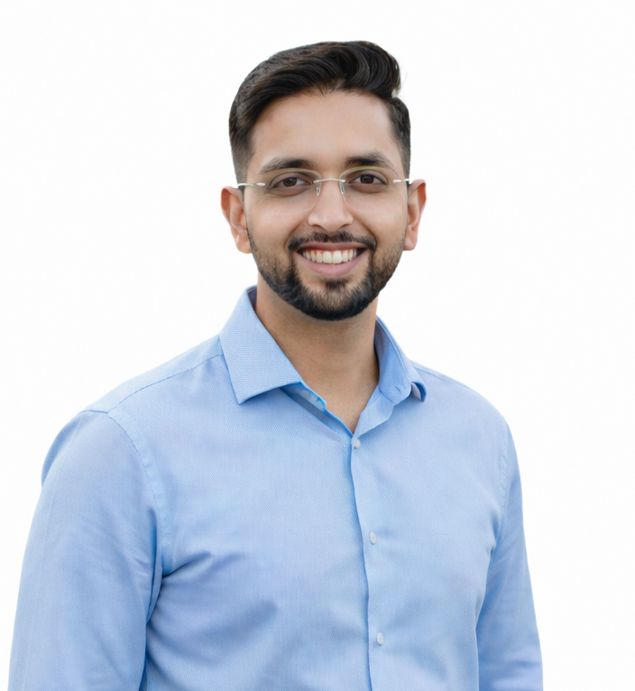

Designing and operating cloud-first Oracle database platforms with a focus on high availability, performance engineering, and automation.
Oracle Cloud Infrastructure (OCI), Autonomous Database deployment & operations
Oracle RAC, Data Guard, RMAN for resilient production systems
AWR, ADDM, and ASH for proactive tuning and stability
4+ years of experience engineering and operating Oracle database platforms with a strong focus on cloud adoption, high availability, and performance optimization.

Database & Infrastructure Engineer
Managed and operated a mission-critical national-scale Oracle database environment supporting EPFO, one of the largest government systems in India. The project involved high availability, performance tuning, backup governance, and lifecycle management of complex Oracle RAC and Multitenant architectures.
Database Engineer (Migration & DR Focus)
Worked on the EPFO 2.0 modernization initiative, focused on database migration, disaster recovery, and UAT stability to support next-generation application upgrades.
Cloud Database Engineer
Currently working on a cloud-first implementation involving migration and management of databases on Oracle Cloud Infrastructure (OCI) using Oracle Autonomous Database. This project represents a shift from traditional DBA operations to cloud-native database engineering.
Proso.ai
August 2025 - Present | Noida, India
ITWINGS INFOSYSTEM PRIVATE LIMITED
July 2021 - August 2025 (4 years 2 months)
Oracle
Oracle
Oracle